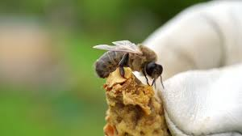
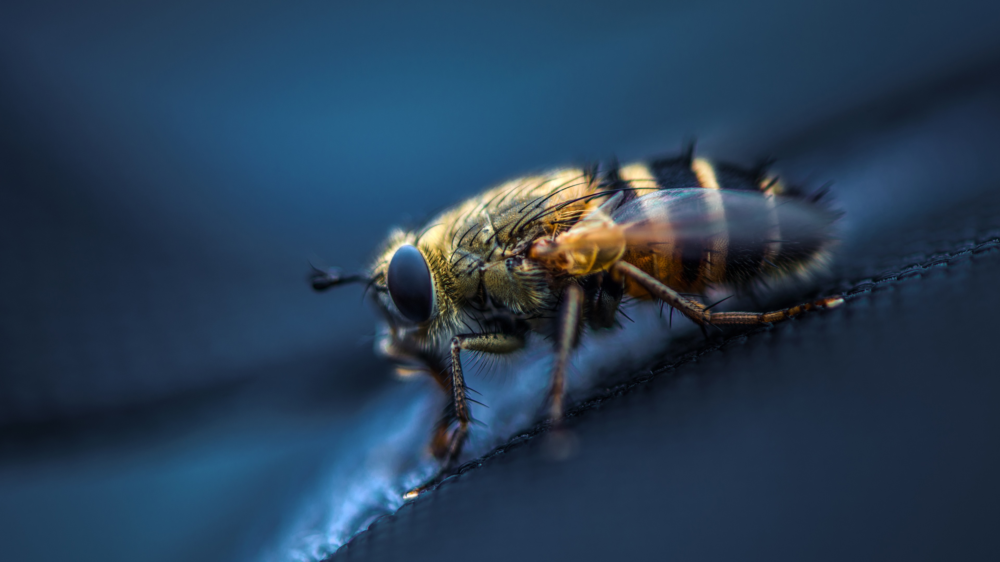

Características Gerais e Hábitos
O comportamento da abelha preguiça mirim (Melipona quadrifasciata) é caracterizado
por uma estrutura social organizada, com uma rainha, operárias e machos. As operárias
se dedicam a várias funções, como forrageamento, cuidado das larvas e defesa da colônia,
usando a dança das abelhas para comunicar a localização de fontes de alimento. Elas
constroem favos de mel em cavidades, utilizando cera produzida por elas, e, apesar
de não terem ferrão, empregam outras estratégias para proteger a colônia. Esses
comportamentos colaborativos são essenciais para a sobrevivência e eficiência
na polinização.

